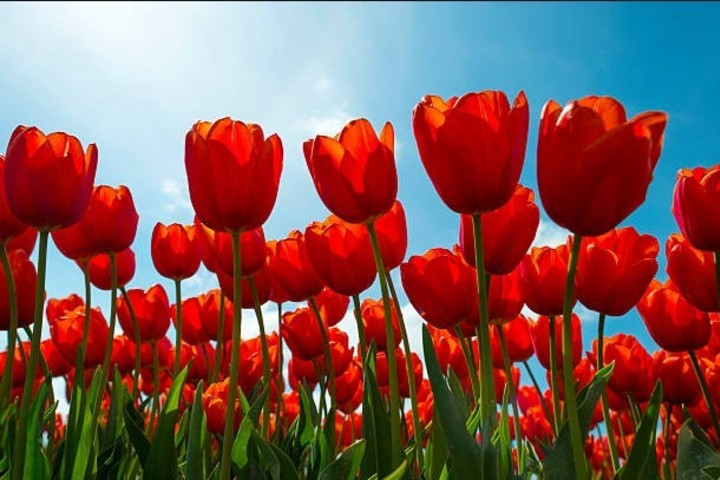
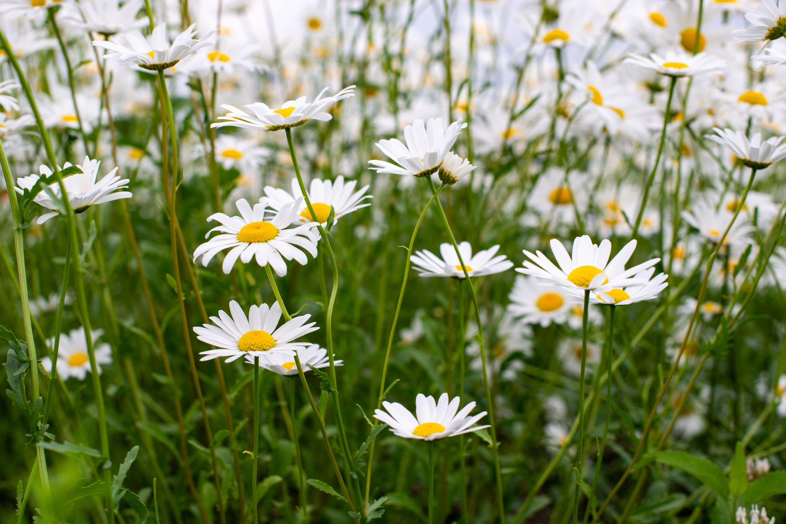

- TULIPAN -
Los tulipanes son plantas bulbosas (almacenan nutrientes en estructuras subterráneas) que suelen tener un tallo simple que puede medir hasta sesenta centímetros. Sus hojas, lanceoladas, son grandes. En la parte superior del escapo aparece la flor, también de dimensiones importantes, que se caracteriza por sus colores.
- MARGARITAS -
Las margaritas son flores encantadoras que florecen durante gran parte del año, desde la primavera hasta el invierno. Son plantas resistentes que necesitan mucha agua y luz solar para crecer, pero también pueden adaptarse a áreas de sombra. Además de su belleza estética, las margaritas también tienen usos culinarios
- FLOR DE LOTO -

La flor de loto es una planta acuática de la familia de las nelumbonáceas. Esta planta es originaria de Asia y es una de las más habituales de pantanos, lagos, lagunas, estanques y albercas. En ellos, sus raíces rizomatosas logran abrirse paso entre el fango hasta llegar a la superficie.
- ROSA -

Las rosas son flores exquisitamente hermosas y reconocibles por su apariencia distintiva y su fragancia embriagadora. Se presentan en una amplia gama de colores, desde el rojo pasión hasta el blanco puro, pasando por el rosa, el amarillo, el naranja y el morado. Cada tono evoca una emoción diferente y puede transmitir diversos mensajes, desde el amor apasionado hasta la gratitud y la amistad.